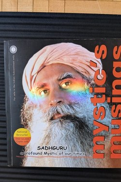

Library › Self-Improvement
Mystic's Musings — Summary & Key Lessons

A yogi's early answers to seekers: death, destiny, money, love — raw questions, sharper responses.
📖 OPEN THE FULL INTERACTIVE BREAKDOWN →🌐 Read it in Hindi, Hinglish, Gujarati, Tamil & 22 more languages — free, with audio.
💡 The Big Idea
Mystic's Musings collects candid dialogues on the big questions — why we are here, what death is, whether destiny is fixed, how to handle desire and fear. Sadhguru's consistent thread: your 'life' is not what happens to you but how much of it you allow in; the mystic is one who has no 'me' standing between himself and existence. His answers are often startlingly direct, refusing both comfort and condemnation.
🧠 The 9 Key Lessons
Lesson 1: Life Is Happening Through You
Section 1: Existence
The recurring shift in the book: you are not the doer so much as the happening — the universe acting through a body. Understanding this is not passivity; it is the end of the exhausting pretense that you must control everything. What remains is full participation without the weight of ownership.
📖 Example: Breathing happens without you; digestion happens without you; most of you happens without you. You are mostly witnessed, not authored. Read the full example →
⚡ Do this: Notice today one thing that works without your control — and let the relief be real.
Lesson 2: Desire Is Not the Enemy
Section 2: Desire
Contrary to ascetic clichés, Sadhguru says desire is fuel — the problem is not wanting but being possessed by wanting. The test: are you using desire, or is desire using you? When desire serves your growth, it is fire; when it serves only itself, it is slavery. The path is not killing desire but owning it consciously.
📖 Example: The student who wants knowledge is powered; the one who wants the marks is owned by the wanting. Read the full example →
⚡ Do this: Name one strong desire and ask: is it serving my growth or using me?
Lesson 3: Death as a Teacher
Section 3: Death
The book's most powerful passages treat death not as a topic to avoid but as the definition of the deadline that gives life shape. Coming to terms with mortality — not morbidly, but clearly — collapses false priorities instantly. Most regrets are of things not done, not of things done.
📖 Example: The dying often speak of wanting time with loved ones — rarely of the extra meeting they took. Read the full example →
⚡ Do this: Write what you would do differently if you had one year — then start the top item this month.
Lesson 4: Destiny Is a Habit
Section 4: Destiny
Sadhguru redefines destiny: it is not written in stars but in the pattern of your past — the grooves of habit and reaction. Most people's future is simply their past repeated; they call it destiny. The person who changes the groove changes the chart. Willpower alone is weak; the trick is changing the pattern, not fighting it.
📖 Example: A person who 'always' procrastinates is following a groove; a person who changes the trigger, the place, the tool — changes the groove. Read the full example →
⚡ Do this: Pick one pattern you call 'this is just how I am' — and change its trigger or its environment this week.
Lesson 5: The Seeker Meets Reality
Section 5: The Mystic
The final question is the seeker's trap: wanting enlightenment as an achievement. Sadhguru's answer — you cannot seek what you already are; you can only remove the seeking. The mystic's life is ordinary action with extraordinary clarity. That is also why the book's practical advice is so mundane: eat well, sleep well, be involved, be aware.
📖 Example: The most 'spiritual' people you know are often the ones most present at breakfast — not on mountaintops. Read the full example →
⚡ Do this: Pick one ordinary task and do it with total attention — an experiment in mystical ordinariness.
Lesson 6: Consciousness Is the Only Substance
Chapter 2: On Consciousness
Sadhguru's metaphysical core is stated plainly: consciousness is not produced by the body — the body is produced by consciousness. This is not an intellectual claim to argue but a direction to explore: the one thing you experience directly and cannot objectify. His method is experiential — he repeatedly refuses to explain and instead insists you come and see, because the map is not the territory.
📖 Example: The dream is real while you are in it; waking shows it was made of something else. The 'material' world, he suggests, is a similar dream with a subtler projector. Read the full example →
⚡ Do this: Once today, step back from your thoughts and observe the one who observes. Not a philosophy session — a 30-second look inward.
Lesson 7: The Guru's Grace: The Fire That Lights the Fire
Chapter 5: On the Guru
Sadhguru's teaching on the guru is counterintuitive and honest: the guru does not give you anything — he is a catalyst, like a flame that lights your lamp without losing its own fire. The relationship is not submission; it is transmission through proximity. He is explicit that you must not trust but TEST the guru, and that the ultimate point is your own realisation, not his glory.
📖 Example: A candle lighting another candle loses nothing; the second flame is full flame, not a copy — exactly the guru's ambition for the student. Read the full example →
⚡ Do this: If you have a teacher or mentor, test his teaching against your own experience this week. Keep what survives the test.
Lesson 8: The Compulsion to Be Someone
Chapter 6: On the Self
The book's sharpest psychological insight: you are not suffering from who you are, but from the compulsion to be someone in particular — to be recognised, remembered, special. This compulsion is the engine of anxiety and the reason success so rarely satisfies. The mystic's remedy is not self-improvement but self-inquiry: the 'I' you are defending is a story, and the one telling the story is fine.
📖 Example: The award feels hollow because the hunger was never for the award — it was for a self to be confirmed, and no award can do that. Read the full example →
⚡ Do this: Notice your next 'look at me' impulse and ask: who needs this confirmation? Let the moment pass without feeding it.
Lesson 9: Grace Is Not a Reward — It Is the Way
Chapter 8: On Grace
Sadhguru reframes the mystical idea of grace: it is not a prize for good behaviour but an alternative to struggle — the shift from 'doing' to 'being available'. His image: you cannot pull the river to you, but you can step into it. Grace is what happens when the seeking stops fighting the finding, and the practical preparation is simplicity, attention and honesty.
📖 Example: The person who 'tries to be successful' exhausts himself; the one who becomes deeply good at something finds success as a side effect. Read the full example →
⚡ Do this: Pick one area where you are pushing the river. For one week, stop pushing: sharpen the craft, relax the outcome, and watch what arrives.
✅ 5-Step Action Plan
- Notice what runs without your control — once daily.
- Audit one desire: serving you, or using you?
- Write the one-year list; start the top item this month.
- Change one 'that's just how I am' pattern via its trigger.
- One ordinary task, done with total attention, daily.
⚠️ When This Doesn't Work
Early Sadhguru is provocative and occasionally reductionist; some answers are metaphysical assertions presented as fact. Mine the psychology — desire, pattern, mortality — and leave the claims you cannot verify.
💀 The Graveyard Proves It
🕉️ Rajneeshpuram — The Spiritual Utopia That Became a Surveillance State. Burn: A commune of thousands, 751 poisonings, and the guru's movement exiled from America Read the full case study →
💬 Best Quotes from Mystic's Musings
- “The only way to experience life is as it is, not as you think it should be.”
- “Death is not a tragedy — a life never lived is.”
- “Whatever you are seeking is essentially an experience of yourself in a different way.”
Interactive version: mark lessons as read, listen in your language, share quote cards.